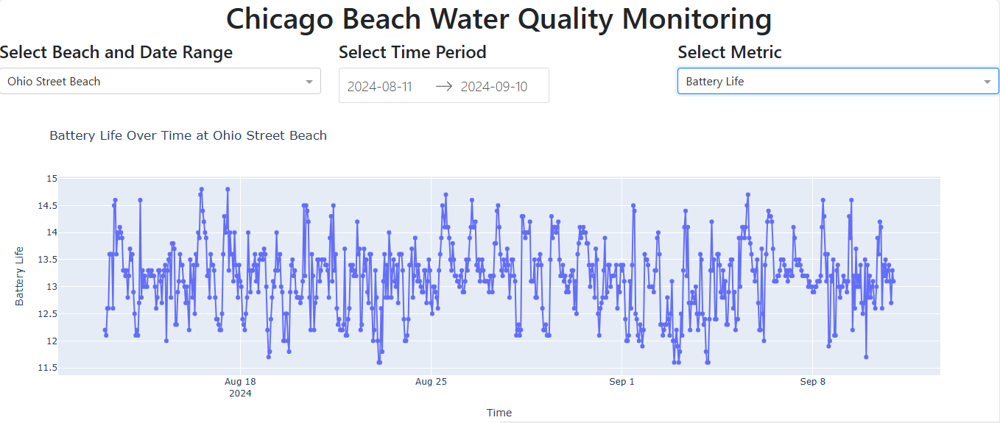

Overview
This project explores sensor data collected from several Chicago beaches, focusing on environmental and operational conditions. Key metrics included water temperature, wave height, turbidity, wind speed, and sensor battery level. The goal was to understand how these variables change over time and across locations to provide insights useful for public safety, recreation, and city planning.
Images & Screenshots
Key Features
- Multi-year dataset analysis of Chicago beach sensor readings
- Focus on physical conditions: water temperature, wave height, turbidity, and wind
- Operational monitoring of sensor health via battery level tracking
- Time series and seasonal trend analysis
- Analyses for inter-beach comparisons and daily fluctuations
- Interactive data visualizations using Plotly Express
- Structured storage and querying of data with PostgreSQL
Technologies Used
Python, PostgreSQL, Psycopg2, Plotly Express, Dash, Pandas, Flask, Public Data from the Chicago Data Portal
Challenges & Lessons
One of the main challenges was managing gaps in the data caused by seasonal sensor operation and condition-based activation. Many sensors recorded data only during specific months or when triggered by certain environmental thresholds, resulting in substantial null values. Handling these inconsistencies required careful filtering and interpolation strategies. This process strengthened my ability to work with incomplete real-world datasets and improved my skills in data cleaning, transformation, and filtering for analysis-ready pipelines.